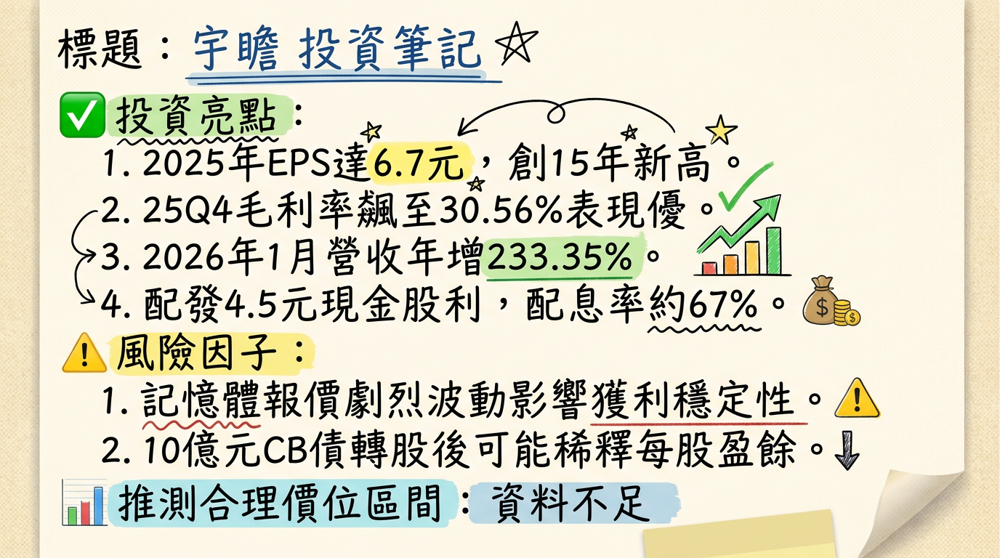

8271 宇瞻 (Apacer) 深度研究報告
一句話摘要
受惠記憶體結構性缺貨超級循環，宇瞻透過「高庫存策略」與「工控/AI轉型」雙引擎，2026年獲利有望再創歷史新高。二、公司概覽
宇瞻（8271）為宏碁集團成員，已成功由消費性記憶體品牌轉型為工業控制（Industrial）與智慧應用解決方案領導商。
1. 業務與產品線
- 記憶體模組 (DRAM)： 包含工業級與消費級 DDR4、DDR5，主攻高門檻醫療、車用市場。
- 快閃記憶體 (NAND Flash)： 工業級 SSD、強固型儲存方案。
- 智慧應用： 與群聯合作之 aiDAPTIV+ 邊緣運算方案、AI+AOI 智慧檢測、電子紙應用。
2. 營收結構表格（2025 年數據）
| 類別 | 營收佔比 | 毛利貢獻度 | 核心應用重點 |
|---|---|---|---|
| 記憶體模組 (DRAM) | 50.48% | 中/高 | DDR4 缺貨漲價紅利、DDR5 滲透率提升 |
| 快閃記憶體 (NAND) | 48.14% | 中/高 | 工業級 SSD、高階強固型儲存 |
| 其他（智慧應用） | 1.38% | 極高 | AI+AOI 檢測設備、電子紙、Edge AI |
- 市場應用佔比 (2025 Q4)： 垂直應用（工控、醫療、車用）佔 70%；消費應用佔 29%。
三、核心競爭優勢
四、財務分析
1. 近期月營收趨勢表格
| 月份 | 營收金額 (億元) | 月增率 (MoM) | 年增率 (YoY) | 備註 |
|---|---|---|---|---|
| 2026/01 | 20.92 | +146.13% | +233.35% | 歷史單月新高 |
| 2025/12 | 8.50 | -18.66% | +33.84% | 惜售策略控制出貨 |
| 2025/11 | 10.45 | -15.86% | +35.76% | - |
| 2025/10 | 12.42 | +6.65% | +76.52% | - |
| 2025/09 | 11.65 | +15.70% | +88.62% | - |
| 2025/08 | 10.07 | -4.43% | +50.52% | - |
2. 季度數據與年度趨勢
- 2025 全年： 營收 111.24 億元 (YoY +42%)，EPS 6.70 元 (YoY +207%)。
- 2026 展望： 法人共識 EPS 預估上修至 7.5 - 8.5 元。
五、法說會重點 (2026/02/26)
- 供需 Guidance： 執行長張家騉明確指出，原廠產能傾斜 HBM 導致 DRAM/NAND 供給短缺將持續整個 2026 年，最快 2027 下半年才緩解。
- 惜售策略 (Withholding Strategy)： 2025 Q4 主動控制出貨量，致使單季毛利率跳升至 30.56%，成功轉嫁報價漲幅。
- AI 布局： 定調「儲存成就 AI 未來」，聚焦 Edge AI 與解決運算記憶體不足之 aiDAPTIV+ 技術。
六、券商觀點
由於 2026 年初營收暴發，多數 2025 年舊目標價（60-65元）已失效，以下為最新評價整理：
| 券商名稱 | 目標價 | 評等 | 日期 | 備註 |
|---|---|---|---|---|
| 綜合法人/InvestingPro | 127 - 150 | 強烈買進 | 2026/02/27 | 基於 2026 獲利上修 |
| 兆豐證券 | 60 | 中立 (過時) | 2025/09/10 | 參考價值低 |
| 宏遠證券 | 65 | 看多 (過時) | 2025/02/24 | 參考價值低 |
七、財報深度分析
1. 利潤率趨勢表格
| 期間 | 毛利率 | 營業利益率 | 稅後淨利率 | EPS (元) |
|---|---|---|---|---|
| 2025 Q4 | 30.56% | 16.95% | 13.54% | 3.26 |
| 2025 Q3 | 18.40% | 8.30% | 6.93% | 0.88 |
| 2025 全年 | 20.74% | 9.21% | 7.73% | 6.70 |
| 2024 全年 | 16.60% | 5.30% | 4.20% | 2.18 |
2. 存貨與資產負債分析
- 存貨金額： 截至 2025 年底為 48.14 億元，存貨週轉天數由 79 天拉長至 148.32 天，顯示極為積極的看漲備貨策略。
- 負債比率： 由 26% 上升至 45%，主因為大規模備貨所需的短期借款與 CB 發行準備。
八、股權異動與資本結構
- 可轉換公司債 (CB)： 2026/02 董事會決議發行 10 億元 無擔保 CB，用於購料備貨，為後續營收噴發提供銀彈。
- 庫藏股： 2025 年曾執行買回 600 張，均價 47.99 元，顯見公司對股價之支撐信心。
- 主要股東： 宏碁 (10.72%)、群聯 (10.23%)，股權極度穩定。
- 股利政策： 配發現金股利 4.5 元，配息率達 67%。
九、產業分析（2026 記憶體循環）
競爭格局比較表（2025 數據）
| 公司名稱 | 2025 營收 (億) | 全年毛利率 | 2025 EPS | 競爭定位 |
|---|---|---|---|---|
| 宇瞻 (8271) | 111.24 | 20.74% | 6.70 | 工控 SSD 領先者 |
| 威剛 (3260) | 530.43 | ~22.8% | ~28.0 | 全球模組市佔二哥 |
| 十銓 (4967) | 204.28 | 14.26% | 13.06 | 電競與伺服器 B2B |
| 創見 (2451) | 171.25 | ~45.0% | ~7.44 | 高毛利、老牌工控 |
| 宜鼎 (5289) | 100~120 (估) | ~30%+ | ~18-22 | 工業級 AIoT 龍頭 |
十、近期催化劑 (Catalysts)
- 利多：
2. DDR4 現貨報價受惠美光 2026Q1 停產計畫，出現溢價。
3. 10 億元 CB 資金到位，強化缺貨期之供貨能力。
- 利空：
2. 美國關稅政策變動風險。
⭐ 成長動能時間軸
- 2026 Q1 (1-3月)： 認列 2025 年底低價庫存紅利，1 月營收已展現爆發力。CB 競價拍賣充實營運資金。
- 2026 Q2 (4-6月)： 推出 Glacer X 散熱方案 與 AGI 落地平台。觀察 2025Q4 垂直應用（70%）之續航力。
- 2026 Q3 (7-9月)： AI+AOI 檢測設備 進入半導體封裝客戶放量期。智慧交通之膽固醇電子紙專案入帳。
- 2026 Q4 (10-12月)： DDR5 滲透率預計突破 50%，帶動消費型產品線毛利回升。
十二、2026 展望
- 成長動能： AI PC 帶動的記憶體規格升級、DDR4 結構性缺貨產生的庫存利差、以及智慧檢測（AI+AOI）作為第二成長曲線的營收貢獻。
- 主要風險： 2026 下半年補貨成本上升導致毛利率受壓、全球消費電子需求若因通膨回溫受抑。
十三、投資結論
本報告由 AI 自動產生，資料來源為公開網路資訊，僅供參考，不構成投資建議。產生時間：2026-03-01 04:03
📊 資訊卡


